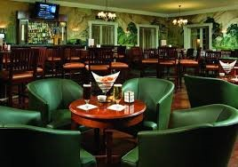
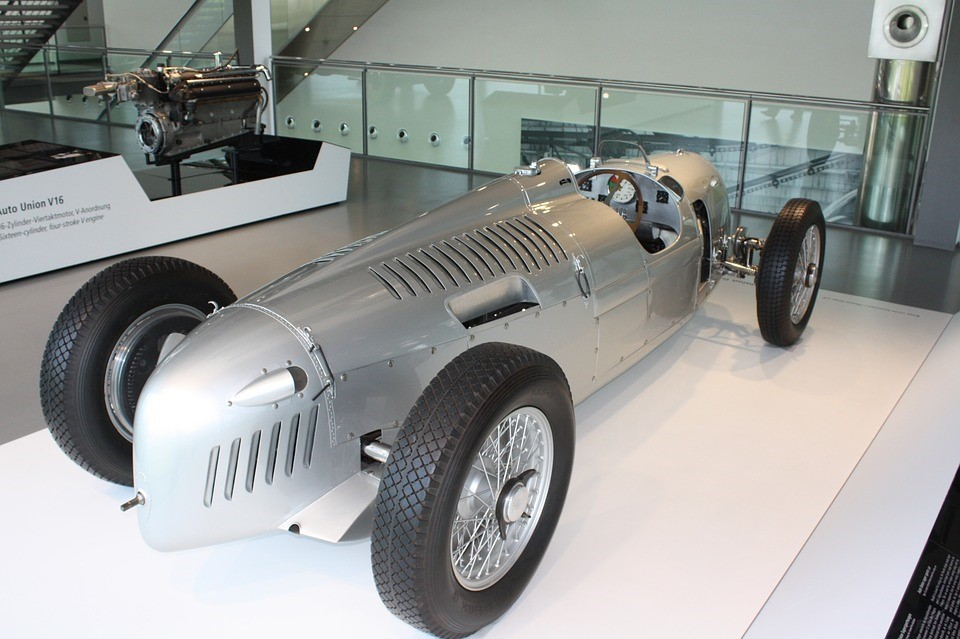

What is the Race House? Well it's everything! Think Great Gatsby because it is classic and it is a family affair in grand fair! The Race House is housed inside of the Gideon Putnam, it is not your sports bar. The Race House is sponsored by the Saratoga Automobile Museum, and has several vintage auto treasures on display to evoke your awe. It has the tangible sophistication that would make Nick Carroway as comfortable as the unreachable Daisy Buchanan or the seemingly affluent Jay Gatsby for that matter. As one writer stated, [it] is "elegant without being overly ornate." Friends, family, all get to experience this unique atmosphere of fun, history, amusement and, of course, delicious food and drink.
Upon entering this historic building you are amazed by the exhibition of classic cars provided by one of our partners and main sponsors, the Saratoga Automobile Museum. These beauties you will see lined up to welcome you into the restaurant to begin your dining pleasure. They are also exhibited in various locations throughout the grounds and outside for specific event days.

There are several dining areas on the grounds from small to very large according to party size, season and other factors. While we do provide enthralling location, the food is tantalizing as well.Call ahead to check events, make reservations or schedule your own event.


Though mom thought she would leave the gaming at home, at least she can participate when you challenge her to a race on one of the Race House many arcade games!


We have a huge amusement arcade filled with games to challenge your need to race, your need to compete, your need for speed, your need to keep the kids entertained until it's time for your reservation. For your convience, we will notify you when your reservation is available when you are in the game room.


The Race House offers recreational karts for rent on an outdoor track. Karts can be rented in 15, 30, or 60 minutes sessions on a daily basis depending on weather conditions [this is a seasonal activity that runs through Labor Day]. Patrons are welcome to arrive anytime during track hours(12pm-8pm Sun-TH, 11am-9pm F-Sat) to race at a reasonable price, without appointments or the challenge of having to own their own equipment and gear. We provide all necessary safety gear, though the Saratoga Automobile Museum gift shop offers a beautiful selection of racing gear for the whole family featuring the museum logo. They have race wear styled after some of their special collections vehicles and personalities from various eras including modern/contemporary models. The Race House safety gear includes helmets, gloves and safety eyewear. All gear and machinery are cleaned daily and throughout the day. Our karts use sturdy chassis complete with dedicated bodywork, for added driver safety. There are also single and double rental karts. The Race House is mindful of the multiuse purposes of the environment and outdoor tracks are for low-speed karts, strictly for amusement. Some karts have dedicated chassis equipped with low powered four-stroke engines or electric motors that go up to 15 hp (11 kW) that are designed for the safety of pedestrians, drivers and specifically for rental use.
Renowned for its locale by accommodating visitors who were taking advantage of Saratoga’s hydrotherapy in the early 20th century, The Gideon Putnam also drew its share of high end patrons and celebrities. Today the Gideon Putnam houses The Race House as their main feature dining option along with their accommodations and services. Hotel Features and Amenities Include: